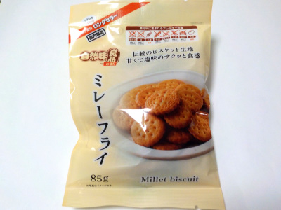

菊花堂のミレーフライ。
2023/11/30

ミレービスケットじゃなくてミレーフライです。でもMillet biscuitとも書かれています。どっちでもいいんでしょうね。
33枚入ってました。
コンガリ焼けてていい歯ごたえのビスケットです。油控え目で軽いので、次々食べたくなりました。
岐阜県岐阜市本町5丁目39番地
2023/11/30

ミレービスケットじゃなくてミレーフライです。でもMillet biscuitとも書かれています。どっちでもいいんでしょうね。
33枚入ってました。
コンガリ焼けてていい歯ごたえのビスケットです。油控え目で軽いので、次々食べたくなりました。